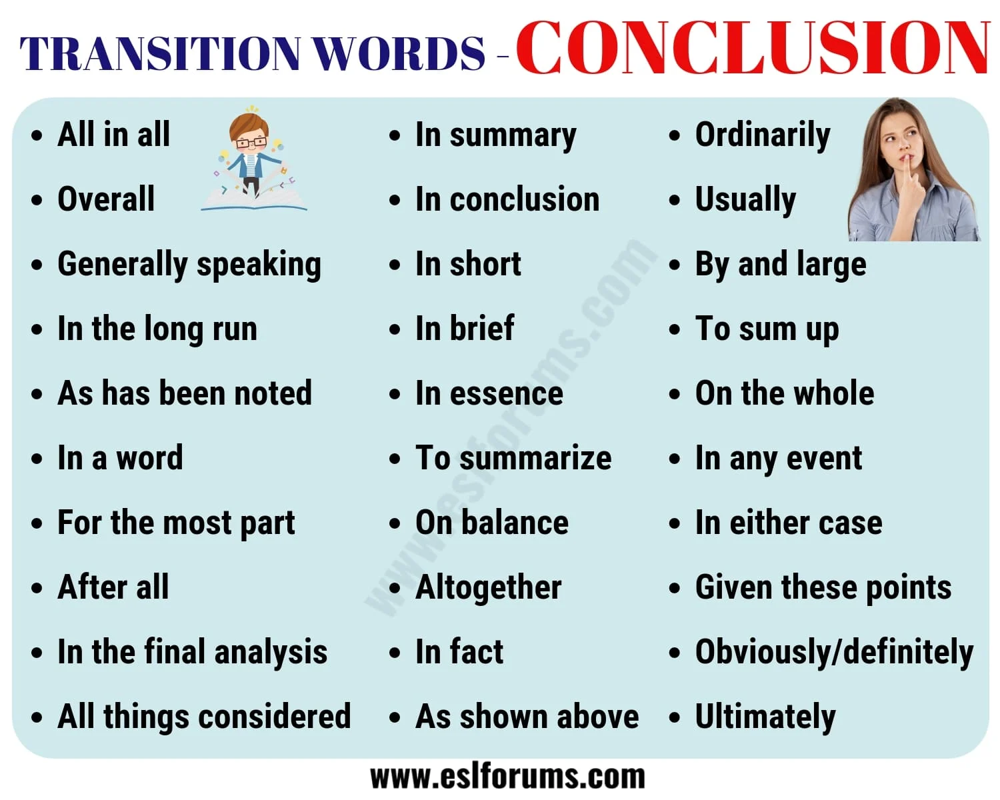
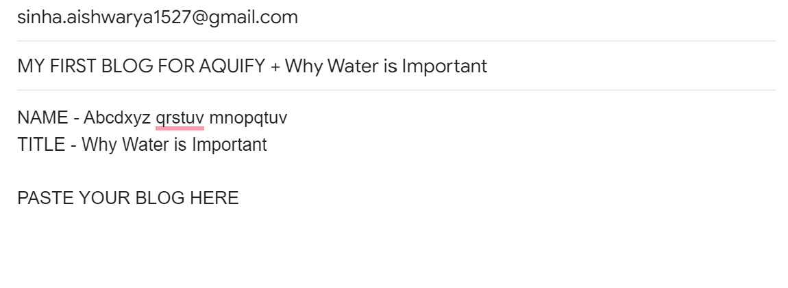

Ever wondered how AQUIFY selects blogs as "publish-able"? No worries, you can do it! AQUIFY considers blogs which have immersing and interesting content, so here's how you can make your blog post just like that!
Step 1. Think of a topic
Thinking of a topic is not that hard right? WRONG! Thinking of a topic is the key to writing a READABLE blog. In AQUIFY, anything related to water should be your main priority for a topic. Let's take an example - "Is water overrated?". Although it is not the best example, it surely intrigues your reader and that is something you should never forget to include in your blog title. To sum it up - Your title should be intriguing, interesting and it should sum up your entire blog in one line.
Step 2. List down the points you want to include
Moving on, after writing your blog title, you want to list down all the points you want to state in your blog and organize them in order. Make sure that the points are clear, concise and that they actually describe your topic. Now you have the key points around which you will write your blog.
Step 3. Write the blog
This step seems so simple, but trust me, it is not. Writing a blog is the hardest part after figuring out your title. But do not despair, AQUIFY is here to make your prepared! :) Step 3a. Write your introductory Make sure you start your introductory with either a story, question or any thing that makes the reader want to read more. Let's give you an example introductory on the topic 'Why Saving Water Is Actually Important' - I looked around myself. A bucket of water right next to me. I wondered how many people do not have access to this bucket of water. Are there actually people who haven't had access to water? It was hard for me to imagine. Is saving water actually important? There is a good example of a introductory to a blog. It makes you want to read more and that is what you should keep in mind while writing an introductory. Second, you should remember that your introductory should be simple and it should introduce your topic within it. Step 3b. Write the body Do you remember the points you had written earlier in Step 2? Rewrite them in the form of paragraphs now. Ensure that the paragraphs are concise and clear to read. Remember - Flowery Words do not make your paragraph seem clear, it makes it rather confusing. Step 3c. Write your conclusion Finally, the main content of your blog is done and now you have to end it smoothly. But wait, how can we do that? It is quite easy, actually. Here are some phrases with which you can start your concluding paragraph -
- To conclude...
- In summary...
- To summarize...
- All points considered...
Now that you've written your conclusion, verify that it restates your main point and it summarizes your entire post well. This is the key to a good conclusion.
Step 4. Check everything once more
There is no explanation needed. Just re-check your work and make sure that there are no transition errors, grammatical errors or any errors in general.
Step 5. SEND YOUR BLOG TO AQUIFY!
Once you're sure that your blog is "publish-able", send your work to our creator: sinha.aishwarya1527@gmail.com. She will check your work herself and publish it for you!
